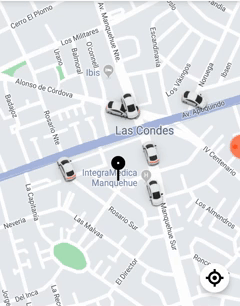

<<<<<<< Updated upstream
<!-- <section class="container m-2" *ngIf=isLogged> -->
=======


>>>>>>> Stashed changes
<section class="container m-2">
    
    <app-menu></app-menu>
    <div class="m-1">
        <input type="text" #address class="form-control" placeholder="¿A dónde vas?" />
    </div>
<<<<<<< Updated upstream
    LOGGED USER: {{isLogged}}
    <button (click)="onLogout()">Salir</button>
</section>
=======
</section>
>>>>>>> Stashed changes
